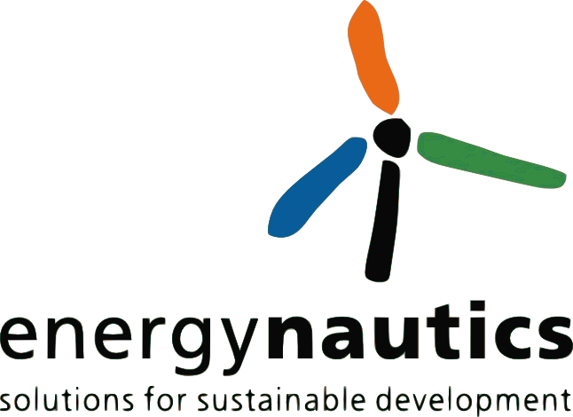

German Jordanian University (GJU)
Salem Al-Agtash
Dr. Ala’ Khalifeh
Dr. Yasser Rajjal
Ms. Ikram Al Naji
Dr. Ala’ Khalifeh
Dr. Yasser Rajjal
Ms. Ikram Al Naji
The German-Jordanian University is a public university. It was founded in 2005 by a Royal Decree, in
accordance with a memorandum of understanding reached between the Ministry of Higher Education and
Scientific Research of the Hashemite Kingdom of Jordan and the Federal Ministry of Education and
Research of the Federal Republic of Germany. GJU is modeled on the German applied-sciences model,
characterized by its focus on putting knowledge into practice and on promoting knowledge transfer. It aims to
play a significant role in promoting links between Jordan and Europe, and in particular with Germany.
GJU will actively participate in the project, building on its research profile in power systems, smart grids, and
renewable energy. GJU will be coordinating the project and will participate in the implementation,
dissemination, and coordination activities of the project.
Professor Salem Al-Agtash
brian.azzopardi@mcast.edu.mt
brian.azzopardi@mcast.edu.mt
Malta College of Arts, Science and Technology (MCAST)
Dr. Eur. Ing. Brian Azzopardi
Dr. Azzopardi
Dr. Azzopardi
The Malta College of Arts, Science and Technology (MCAST) was established in 2001 and is the leading
further and higher education institution in Malta for the provision of vocational qualifications with over 10,000
students and 640 academics and corporate personnel and 10 Institutes. MCAST has established national
and international partnerships such as with Fraunhofer Institute.
The MCAST Institute of Electrical and Electronics Engineering (IEEE) has 40 academics. The MCAST IEEE
has a multi-disciplinary approach in energy and power systems (including smart grids and micro grids), electrical machines and drives, renewables and alternative energy sources (including electric vehicles),
transportation, energy efficiency, electronics and power electronics, biomedical engineering,
telecommunications, computer engineering and embedded systems.
Modelling, Integration, Implementation, Demonstration
Dr. Ing. Brian Azzopardi
brian.azzopardi@mcast.edu.mt
brian.azzopardi@mcast.edu.mt

KIOS Research Center for Intelligent Systems and Networks, University of Cyprus (UCY)
Prof. Elias Kyriakides
Dr. Irina Ciornei
Lenos Hadjidemetriou
Markos Asprou
Dr. Irina Ciornei
Lenos Hadjidemetriou
Markos Asprou
UCY is the first public university and the main research institution in Cyprus and has demonstrated a rich
research activity in power systems, power electronics and renewable energy sources. This project will be
implemented by the KIOS Research Center (www.kios.ucy.ac.cy), which was established in 2008 and has
attracted more than 10 million euros in research funding from European, national and industrial sources. The
UCY team is expert in the control of power electronic converters for RES, power system reliability and
quality, grid-integration of RES, and optimization techniques. Outcomes from other research projects running at UCY (e.g., ZeroCO2, HYBRID, SyncPower and ADVANCEDGRIDS, FAULT-ADAPTIVE ERC Advanced
Grant) will contribute to the project.
The electric machines and power electronics laboratory is equipped with a 3 kW programmable AC source, a
3 kW AC electronic load, 5 kW DC power supply, power electronic converters, electric machines,
transformers, electric loads, power analyser, PV panels, fuel cells, and 1 kW and 20 kW three-phase
inverters for PV interconnection. Our outdoors laboratory is equipped with a 225 kW wind turbine, an 80 kW
electrolyzer, a 40 kW fuel cell system, a patented 40 kW DC/AC power conversion mechanism, and several
AC and DC electric loads.
Associate Professor Elias Kyriakides
elias@ucy.ac.cy
elias@ucy.ac.cy

Centre for Research and Technology Hellas/InformationTechnologies Institute (CERTH/ITI)
Dr. Dimitrios Tzovaras
Mr. Dimosthenis Ioannidis
Mrs. Nikolopoulou Anastasia
Mr. Dimosthenis Ioannidis
Mrs. Nikolopoulou Anastasia
The Centre for Research and Technology-Hellas (CERTH), one of the largest research centres of Greece,
was founded in 2000. It is a non-profit legal entity governed by private law, supervised by the General
Secretariat for Research and Technology (GSRT) of the Greek Ministry of Education and Religious Affairs.
CERTH has important scientific and technological achievements in many areas including: Energy,
Environment, Industry, Mechatronics, Information & Communication, Transportation & Sustainable Mobility,
Health, Agro-biotechnology, Smart farming, Safety & Security, as well as several cross-disciplinary scientific
areas.
The Information Technologies Institute (ITI) was founded in 1998 as a non-profit organisation under the
auspices of the General Secretariat for Research and Technology of Greece, with its head office located in
Thessaloniki, Greece. Since 10/03/2000 it is a founding member of the Centre for Research and Technology
Hellas (CERTH).
CERTH/ITI will be responsible for the Micro-grid’s holistic modelling and performance analysis, building
automatation and control framework development, targeting mainly the incorporation of optimal control
strategies for the RES sources of the envisioned micro grid. Also, it will deploy advanced analytics
techniques for facility management of the micro grid and will deliver ambient user interfaces to the building
spaces for raising occupant’s awareness for the multi benefits of energy generation technologies.
Dr. Dimitrios Tzovaras
Dimitrios.Tzovaras@iti.gr
Dimitrios.Tzovaras@iti.gr

Energynautics (EN)
Dr. Thomas Ackermann
Dr. Martensen
Dr. Brown
Dr. Tröster
Dr. Martensen
Dr. Brown
Dr. Tröster
ENERGYNAUTICS, founded in 2000, is a power systems consultancy firm based in Germany. It has been
involved in numerous research and consulting projects for governments, electricity network operators,
regulators, manufacturers and investors, especially in matters relating to innovative grid design and power
system integration of renewable energies. In the context of this proposal, the Danish Cell Project is the most
relevant reference. It was financed by the Danish TSO Energinet.dk and focused on the integration of
renewable energy into island/power systems involving the development of new control approaches including
field tests in Denmark. It consists of micro-grids within a distribution network which allow the operation of
wind turbines, photovoltaic systems and small combined heat and power plants in electrical islands.
Modelling of the power system of the micro-grid, including all controllers for performance testing and
optimization.
Dr. Thomas Ackermann
t.ackermann@energynautics.com
t.ackermann@energynautics.com
University of Seville, Power Engineering Group (UoS)
Department of Electrical Engineering
Main research areas of the Team related to the project are the following:
-- Transmission Operation and Planning: State estimation, Optimal Power Flow, Security and reliability
analysis, Transmission planning.
-- Distribution Operation and Planning: State estimation, Distribution substations, Optimal feeder
configuration, Continuity of supply.
-- Energy Efficiency and Quality of Supply: Waveform monitoring; Active, passive and hybrid filters; --
Mitigation of magnetic fields; Efficient use of energy.
-- Application of Electronic Devices in Distribution Networks: Linking radial MV feeders via back-to-back
VSCs; Transformer electronic tap-changers.
-- Renewable Energy Integration: Integration with the grid and electricity; Control of wind energy conversion
systems.
The Team has extensive experience in the development of research projects, both at national and European
level:
1. Pan European Grid Advanced Simulation and State Estimation (PEGASE), 2008. Seventh Framework
Programme Energy. 7.2 PAN-EUROPEAN Energy Networks.
2. New real-time tools for the optimal operation of smart distribution grids. Spanish Ministry of Education
(DGI), ENE2007-63306/CON. 2007-2010.
The Team will bring its expertise in the following tasks of the project:
Constraints and requirements of the electricity grid regarding the integration of renewable energy sources.
Steady-state optimal scheduling of resources for active smart micro-grids, including forecasting of RES generation and load behaviour.
Optimization tools for active smart micro-grids, including stochastic optimization.
Constraints and requirements of the electricity grid regarding the integration of renewable energy sources.
Steady-state optimal scheduling of resources for active smart micro-grids, including forecasting of RES generation and load behaviour.
Optimization tools for active smart micro-grids, including stochastic optimization.
Dr. Jose L Martinez Ramos
jl.martinez.ramos@gmail.com
jl.martinez.ramos@gmail.com

SCAMRE LABORATORY / ENPOran
Dr. Mounir Khiat
ENPO:
The Polytechnic National School of Oran (ENPO) is engineers' Algerian national polytechnic school. The
ENPO program lasts three years (after two years of preparation in high school), and is structured in three
departments: electrical, civil and mechanical engineering. The Department of Electrical Engineering has
three sectors: electrotechnics, automatic and electronics. ENPO has nine approved research laboratories.
Besides the engineering degree, it provides Master's and PhD degrees.
SCAMRE LABORATORY: The themes of research for SCAMRE (founded in 2006) are developed within five teams. The research group has developed a Postgraduate Program in Power Engineering since 2003 and a PhD Program. The activities of the group are also devoted to promote the technology transfer to the industry. The research lines of the group are: control of large electric power systems, power system optimization, computational and analytical tools for power systems, FACTS devices, HVDC systems, renewable energy and distributed energy resources, modeling and conception, real time simulation of power systems and smart grids. With over 25 permanent researchers and 40 post-graduate, SCAMRE, is a leader in these research fields in Algeria
SCAMRE LABORATORY: The themes of research for SCAMRE (founded in 2006) are developed within five teams. The research group has developed a Postgraduate Program in Power Engineering since 2003 and a PhD Program. The activities of the group are also devoted to promote the technology transfer to the industry. The research lines of the group are: control of large electric power systems, power system optimization, computational and analytical tools for power systems, FACTS devices, HVDC systems, renewable energy and distributed energy resources, modeling and conception, real time simulation of power systems and smart grids. With over 25 permanent researchers and 40 post-graduate, SCAMRE, is a leader in these research fields in Algeria
The Team will bring its expertise in the following tasks of the project:
Constraints and requirements of the electricity grid regarding the integration of renewable energy sources.
Optimization tools for active smart grids.
Real time simulation of smart grids
Constraints and requirements of the electricity grid regarding the integration of renewable energy sources.
Optimization tools for active smart grids.
Real time simulation of smart grids
Professor Mounir Khiat
khiat2_2000@yahoo.fr
khiat2_2000@yahoo.fr
Power System Group, Abdullah Gul University (AGU)
Prof. Ahmet Onen
Abdullah Gul University (AGU) is the first state university in Turkey to have, as part of its constitution, legal
provision for support by a foundation whose entire efforts are solely dedicated to the work of the University.
AGU has set itself the aim of attracting brilliant faculty members and the brightest students. All the academic
work of the University is in English. Graduates of AGU will be typified by the ability to learn, to think, to
research, and to lead.
In all academic programs, there are practical elements as well as conscious attempts to connect theoretical
knowledge with the real world; the university will aim to produce not employment seekers but employees and
even employers. One of the strongest research areas in AGU is power systems, specifically smart grids.
There are 5 faculties actively working in this field along with their graduate students. The areas of interest
are: power system reliability, renewable integration, power system communication, electrical machines and
power electronics, and smart grid communication.
AGU will focus on operating scenarios, renewable energy integration and optimization based on grid
efficiency, reliability and economy. It will also work on modelling of the grid and develop algorithms to obtain
maximum benefit. In evaluation part, AGU will focus on metrics for utilities, energy suppliers, stakeholder and
customers. AGU will also collaborate in the dynamic optimization part of allocation of renewable sources
based on the time varying nature of loads.
Assistant Professor Ahmet Onen
ahmet.onen@agu.edu.tr
ahmet.onen@agu.edu.tr
Electronic Systems Design Ltd (ESDL)
Mark Calleja
Ing Michael Bonello
Dr. Brown
Dr. Tröster
Ing Michael Bonello
Dr. Brown
Dr. Tröster
ESDL specialises in energy management solutions for buildings. ESDL has developed technology in
hardware, firmware and software, which is deployed in various 5-star properties across the world.
The energy savings possible with ESDL solutions is qualifiable and quantifiable.
ESDL will provide input to the system technical and functional specification and help in the verification,
validation, and recommendations for energy management on the user side.
Dr. Thomas Ackermann
t.ackermann@energynautics.com
t.ackermann@energynautics.com
GEOSYS
Tim Camilleri
GeoSYS delivers cutting edge geospatial technology solutions to all industry sectors, introducing exciting
new ways of viewing and processing data, helping clients make timely and informed decisions on a day to
day basis. The company is the official distributor for ESRI in Malta and has been involved in a number of key
projects, both local and abroad. GeoSYS has also been participant in a number of research projects, namely: iScope, Sunshine and iLocate.
GeoSYS will provide ArcGIS technology, training and support to this project. ArcGIS will form the backbone
for the MicroGrid system upon which the MicroGrid system will be built.
Mr. Tim Camilleri
tim@geosys.com.mt
tim@geosys.com.mt